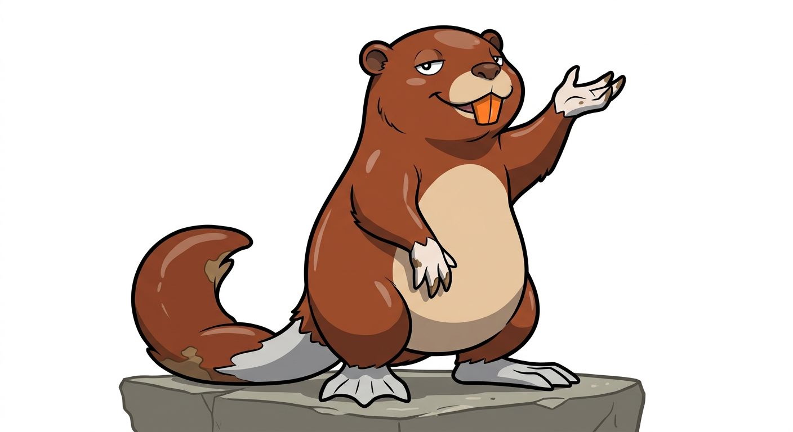

da Pokédex Martemon. Pagina fan-made nel formato di Pokémon Central Wiki.

| Tipo | Acqua |
|---|---|
| Abilità | Acquaiuto (prima) Ingordigia (speciale) |
| Sesso | 87,5% maschi · 12,5% femmine |
| Altezza | 0,7 m |
| Peso | 18,0 kg |
| Tasso di cattura | 45 (11,9%) |
| Uovo | Gruppi Acqua 1 e Campo 20 cicli (min. 5120 passi) |
| Pokédex regionali | Martemon #002 |
| Tasso di allevamento | Medio-lento |
| Esperienza base ceduta | 142 |
| Punti base ceduti | Totale: 2 — PS 2 |
| Colore Pokédex | Marrone |
| Affetto di base | 70 |
Nutriotto è un Pokémon di tipo Acqua, stadio intermedio della linea dello starter Acqua della regione Martemon.
Si evolve da Nutrì a partire dal livello 17 e si evolve in Sciutria dal livello 36.
Nutriotto ha il pelo castano più liscio e più lucido di Nutrì, e una pancia rotonda che ha già cominciato a toccare l'acqua quando nuota. Le orecchie restano piccole, la coda si è fatta spessa, e le zampe posteriori palmate sono finalmente proporzionate al corpo; su quelle anteriori si vedono le prime unghie da scavo, quasi sempre sporche di fango. I due incisivi arancioni ora si vedono anche a bocca chiusa: sono il segno della sua linea, e sono lo strumento con cui rosicchia radici, corde d'ormeggio e, se lasciato fare, le assi dei pontili.
Non vi sono differenze visibili tra maschi e femmine.
Sfacciato con metodo. Ha lasciato il fiume e la timidezza nello stesso momento, e sull'alzaia ha imparato la regola che governerà il resto della sua vita: chi si ferma a guardare, prima o poi tira il pane. Si piazza quindi in vista, sotto il ponte o accanto alla panchina, e aspetta con una zampa alzata; quando la ciclabile è vuota torna in acqua e scava. I suoi primi cunicoli nell'argine sono corti e storti, ma sono un inizio.
Il Naviglio Martesana nel tratto tra Vimodrone e Crescenzago, dove l'alzaia è larga, la ciclabile passa a un metro dall'acqua e la gente cammina piano. Vive in gruppi meno numerosi di Nutrì: ognuno ha la sua rampa di riva e la sua panchina di riferimento.
Erbivoro con una crescente specializzazione nel pane. Mangia ancora erbe e radici, ma ormai calcola i tempi delle passeggiate meglio di quanto calcoli le correnti, e sa riconoscere il rumore di un sacchetto di plastica a trenta metri.
| PS | 85 | |
| Attacco | 75 | |
| Difesa | 80 | |
| Att. Sp. | 50 | |
| Dif. Sp. | 65 | |
| Velocità | 50 | |
| Totale | 405 |
Cresce dove serve: PS e Difesa salgono di venti punti, l'Attacco diventa rispettabile e la Velocità resta quella di uno che non ha fretta. È già un buon muro fisico per la parte centrale del gioco.
| Lv. | Mossa | Tipo | Cat. | Pot. | Prec. | PP |
|---|---|---|---|---|---|---|
| Inizio | Azione | Normale | Fisico | 40 | 100% | 35 |
| Inizio | Bolla | Acqua | Speciale | 40 | 100% | 30 |
| Inizio | Fortificazione | Normale | Stato | — | —% | 30 |
| 9 | Morso | Buio | Fisico | 60 | 100% | 25 |
| 13 | Idrogetto | Acqua | Fisico | 40 | 100% | 20 |
| 17 | Fangosberla | Terra | Speciale | 20 | 100% | 10 |
| 20 | Michettata | Normale | Fisico | 60 | 100% | 10 |
| 24 | Corposcontro | Normale | Fisico | 85 | 100% | 15 |
| 28 | Fossa | Terra | Fisico | 80 | 100% | 10 |
| 33 | Cascata | Acqua | Fisico | 80 | 100% | 15 |
| 38 | Idrondata | Acqua | Speciale | 60 | 100% | 20 |
| 43 | Riposo | Psico | Stato | — | —% | 5 |
| 48 | Idropompa | Acqua | Speciale | 110 | 80% | 5 |
| Mossa | Tipo | Cat. | Pot. | Prec. | PP |
|---|---|---|---|---|---|
| Protezione | Normale | Stato | — | —% | 10 |
| Surf | Acqua | Speciale | 90 | 100% | 15 |
| Fangobomba | Terra | Speciale | 65 | 85% | 10 |
| Sostituto | Normale | Stato | — | —% | 10 |
| Riposo | Psico | Stato | — | —% | 5 |
Il grassetto indica una mossa che ha il bonus di tipo (STAB) quando viene usata da un Nutriotto.
Versione Lambro — Ha lasciato il fiume per il Naviglio. Si piazza sotto il ponte con una zampa alzata e aspetta: chi si ferma a guardare, prima o poi tira il pane.
Versione Martesana — Quando l'alzaia è vuota torna in acqua e scava. I suoi primi cunicoli nell'argine sono corti e storti, ma sono un inizio.
La strada lungo l'acqua. Il Naviglio Martesana fu scavato a metà del Quattrocento per portare l'acqua dell'Adda fino a Milano, e per secoli sull'alzaia, la strada di riva, i cavalli hanno tirato le barche controcorrente. Oggi ci passa la ciclabile, che da Cassina de' Pomm arriva fino a Cassano d'Adda, e il tratto tra Crescenzago e Vimodrone è quello dove la città si allenta: orti, ponticelli, panchine, gente che cammina piano. È il regno dei Nutriotto, che hanno capito prima di tutti che un'alzaia è, in fondo, una fila di persone che si fermano.
Nutriotto è la nutria adolescente dei canali di pianura, quella che ha lasciato gli argini naturali per quelli in pietra e cemento e ha scoperto che vicino alle persone si mangia meglio. L'abitudine di scavare tane nelle sponde è reale e, sulla Martesana come su molti canali lombardi, un problema noto a chi li gestisce.
Nutriotto unisce nutria al suffisso -otto di parole come ragazzotto: non più cucciolo, non ancora adulto, già abbastanza sfacciato.
Il nome giapponese, ヌトリボウ Nutoribō, unisce ヌートリア nūtoria ("nutria") e 坊 bō ("ragazzino").
| Lingua | Nome | Origine |
|---|---|---|
| Giapponese | ヌトリボウ Nutoribō | Da nūtoria e bō. |
| Inglese | Nutriotto | Uguale al nome italiano. |
| Francese | Nutriotto | Uguale al nome italiano. |
| Spagnolo | Nutriotto | Uguale al nome italiano. |
| Tedesco | Nutriotto | Uguale al nome italiano. |